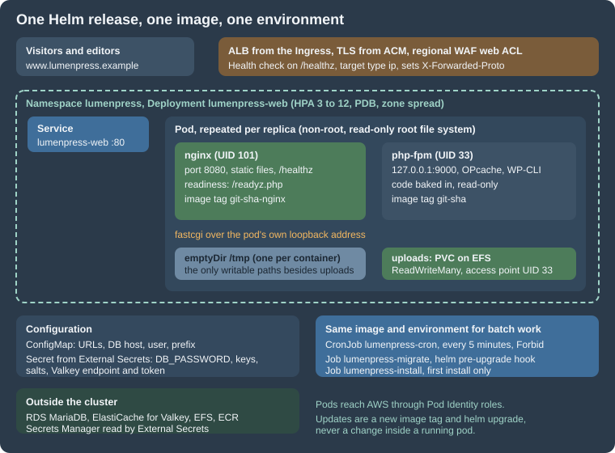

Deploying on EKS with Helm
|
This content was generated with the assistance of AI and should be verified against the official documentation before being relied on in production. |
This page was written against WordPress 7.1.3 as the site baseline (7.1.4, the security release of 2026-10-28, is the version
to run, and is the image used below), PHP 8.4, WP-CLI 2.12.0, nginx 1.29, Helm 4.3.1, Kubernetes 1.36 on Amazon EKS
(1.37 has been available on EKS since 2026-10-01) and External Secrets Operator with its external-secrets.io/v1 API, and
checked on 2026-10-29. Lumen Press runs www.lumenpress.example in the namespace lumenpress of the cluster
lumenpress-prod in eu-west-1; the Helm release is lumenpress and the chart directory lumenpress-wordpress.
The infrastructure underneath (cluster, RDS, EFS, Valkey, ECR, secrets, certificate, WAF) is created in EKS Infrastructure with OpenTofu; the architecture is on Cloud Reference Architecture. This page builds the image, writes the chart and performs the first install. Releases and rollbacks are on Releases, Upgrades and Autoscaling on Kubernetes. Docker, Helm and Kubernetes fundamentals are on Helm, Deployments, Jobs and CronJobs, Health Probes and Lifecycle, Scheduling and Disruptions and Deploying Microservices on EKS, and the single-host image this one grows out of on Containers, Docker and Kubernetes. Everything on this page was validated locally as noted in each section; nothing was deployed to a live cluster.
The release at a glance

Each pod of the Deployment lumenpress-web runs two containers. nginx serves static files and sends .php requests to
PHP-FPM over FastCGI. Both containers share the pod’s network namespace, so nginx reaches FPM at 127.0.0.1:9000 and
there is no Service between them. This is the standard shape for PHP on Kubernetes, and it differs from the Apache image
(mod_php) that the single-server page uses in three ways that matter:
-
the web server and the PHP runtime are tuned and restarted independently, and PHP-FPM’s
pm.max_childrenis the concurrency knob; -
static files never reach PHP: nginx serves
wp-includesandwp-contentassets itself; -
two images are needed, because nginx has to see the same static files that the PHP image carries. The Dockerfile builds both from one source tree, so a release is one commit and two tags.
The image
The Lumen Press repository holds docker/ (this section), plugins/lumen-catalog/, themes/lumen/ and the chart. The
Composer and Node build stages for the plugin are shown on
Containers, Docker and Kubernetes; here the plugin and theme are
plain folders so the Dockerfile stays readable.
# syntax=docker/dockerfile:1
FROM wordpress:cli-2.12.0-php8.4 AS wpcli
# ---- the Redis Object Cache plugin, downloaded at build time (it also works with Valkey) ----
FROM alpine:3.22 AS redis-cache
ARG REDIS_CACHE_VERSION=3.0.0
RUN set -eux; \
apk add --no-cache curl unzip; \
curl -fsSL -o /tmp/redis-cache.zip "https://downloads.wordpress.org/plugin/redis-cache.${REDIS_CACHE_VERSION}.zip"; \
unzip -q /tmp/redis-cache.zip -d /out; \
test -f /out/redis-cache/includes/object-cache.php
# ---- target "php": PHP-FPM with WordPress and the Lumen Press code baked in ----------
FROM wordpress:7.1.4-php8.4-fpm AS php
# The official image keeps WordPress in /usr/src/wordpress and copies it into
# /var/www/html when its entrypoint starts. Here the code is part of the image.
RUN set -eux; \
cp -a /usr/src/wordpress/. /var/www/html/; \
rm -rf /var/www/html/wp-content/plugins/akismet /var/www/html/wp-content/plugins/hello.php \
/var/www/html/wp-config-docker.php /var/www/html/wp-config-sample.php; \
mkdir -p /var/www/html/wp-content/uploads
COPY --from=wpcli /usr/local/bin/wp /usr/local/bin/wp
COPY docker/php/zz-lumen.ini ${PHP_INI_DIR}/conf.d/zz-lumen.ini
COPY docker/php/zz-lumen.conf /usr/local/etc/php-fpm.d/zz-lumen.conf
COPY docker/wp-config.php /var/www/html/wp-config.php
COPY docker/readyz.php /var/www/html/readyz.php
COPY plugins/lumen-catalog /var/www/html/wp-content/plugins/lumen-catalog
COPY themes/lumen /var/www/html/wp-content/themes/lumen
# The plugin folder plus its drop-in: `wp redis enable` cannot copy the drop-in at run time
# on a read-only code tree, so the build does it.
COPY --from=redis-cache /out/redis-cache /var/www/html/wp-content/plugins/redis-cache
RUN cp /var/www/html/wp-content/plugins/redis-cache/includes/object-cache.php /var/www/html/wp-content/object-cache.php
# Code belongs to root and is read-only for the PHP user; only uploads is writable.
RUN set -eux; \
chown -R root:root /var/www/html; \
find /var/www/html -type d -exec chmod 0755 {} +; \
find /var/www/html -type f -exec chmod 0644 {} +; \
chown www-data:www-data /var/www/html/wp-content/uploads
# Skip the official entrypoint: it would try to copy WordPress and write wp-config.php.
ENTRYPOINT ["docker-php-entrypoint"]
CMD ["php-fpm"]
USER 33:33
EXPOSE 9000
# ---- target "nginx": the static files and the proxy to PHP-FPM ------------------------
FROM nginxinc/nginx-unprivileged:1.29-alpine AS nginx
COPY docker/nginx/default.conf /etc/nginx/conf.d/default.conf
# nginx serves wp-includes, wp-content assets and uploads; PHP files are never executed here.
COPY --from=php --chown=0:0 /var/www/html /var/www/html
EXPOSE 8080Source: Dockerfile reference
The Dockerfile was built with docker build --target php and docker build --target nginx while writing this page, with
wordpress:7.1.4-php8.4-fpm pulled from Docker Hub (verify that the tag exists with docker pull when you build; the tag
scheme of the official image is <version>-php<version>-fpm). The PHP target came to about 1 GB and the nginx target to
about 170 MB on the test machine. What it does and why:
-
Three stages, two targets.
wpclionly provides thewpbinary, copied pinned from the official CLI image.redis-cachedownloads the object-cache plugin (see Object Cache, Sessions and Cron in a Cluster). Thephptarget is the runtime. Thenginxtarget copies the finished/var/www/htmlout of thephptarget, so the static files can never differ from the code that PHP runs. -
The code is copied into the image. The official image keeps WordPress in
/usr/src/wordpressand copies it into/var/www/htmlwhen its entrypoint runs. That is a convenience for volumes; here it would write to a read-only file system. The Dockerfile copies the tree once, and replaces the entrypoint withdocker-php-entrypoint, so the officialdocker-entrypoint.sh(which would copy files and generate awp-config.php) never runs. -
Own
wp-config.php. The image’s generated configuration readsWORDPRESS_*variables and aWORDPRESS_CONFIG_EXTRAstring passed toeval(). Lumen Press ships its own file (next section), which reads variables directly, fails loudly when a secret is missing and has noeval(). -
Root owns the code. Files are
root:rootand not writable by the PHP user (UID 33,www-data). Even without a read-only root file system, a vulnerability in a plugin cannot rewrite code. Only the uploads directory belongs towww-data, and in the cluster it is a mounted volume. -
USER 33:33and port 9000. PHP-FPM then runs as a normal user and listens on an unprivileged port. FPM logs a notice that itsuserdirective is ignored when not running as root; that is harmless and expected. -
Akismet and Hello Dolly are removed and
wp-config-sample.phpis deleted: nothing could update them and the sample is noise in a production image. -
nginx-unprivileged. The
nginxinc/nginx-unprivilegedimage runs as UID 101, listens on 8080 and keeps its temporary files and PID file under/tmp, which makes it work with a read-only root file system and a tmpfs. There is no root process in the pod.
PHP and FPM settings
; Immutable code: never stat files again.
opcache.enable = 1
opcache.validate_timestamps = 0
opcache.memory_consumption = 192
opcache.interned_strings_buffer = 16
opcache.max_accelerated_files = 20000
memory_limit = 256M
upload_max_filesize = 32M
post_max_size = 32M
expose_php = Off
display_errors = Off
log_errors = On
error_log = /dev/stderropcache.validate_timestamps = 0 is the production OPcache setting for immutable code: PHP never checks whether a file
changed, which saves a stat per file per request. It is correct here because a code change is a new image and a new
pod, and wrong on any host where files change in place. The 192 MB of OPcache memory and 20 000 accelerated files cover
WordPress core, the theme and a medium plugin set; check opcache_get_status() for a full cache before raising traffic.
log_errors with error_log = /dev/stderr sends PHP errors to the container log, display_errors is off, and
expose_php hides the PHP version header.
; Loaded after the image's zz-docker.conf, so these values win.
[global]
error_log = /proc/self/fd/2
[www]
; FPM runs as UID 33 (set by the container), so no user or group directives here.
listen = 127.0.0.1:9000
pm = dynamic
pm.max_children = 16
pm.start_servers = 4
pm.min_spare_servers = 2
pm.max_spare_servers = 6
pm.max_requests = 500
request_terminate_timeout = 60s
; Liveness and metrics, reachable only through nginx locations that are not public.
ping.path = /fpm-ping
ping.response = pong
pm.status_path = /fpm-status
catch_workers_output = yes
decorate_workers_output = no
clear_env = noSource: PHP Manual: FPM configuration
The pool file loads after the image’s zz-docker.conf and wins on conflicts. pm.max_children = 16 is the number that
limits database connections per pod: every busy worker holds one (the arithmetic with replicas is on the
database page). pm.max_requests = 500 recycles workers to
contain slow memory growth in plugins, request_terminate_timeout stops a runaway request, and the status and ping
paths are reachable only through nginx locations that allow 127.0.0.1. clear_env = no is the default of the official
image and is kept explicit because it is what lets the pod’s environment variables reach PHP.
nginx
# Pod-local: nginx and PHP-FPM share the pod network namespace, so FPM is on 127.0.0.1.
set_real_ip_from 10.0.0.0/8;
real_ip_header X-Forwarded-For;
real_ip_recursive on;
server {
listen 8080 default_server;
server_name _;
root /var/www/html;
index index.php;
client_max_body_size 32m;
server_tokens off;
# Kubernetes liveness: answered by nginx itself.
location = /healthz {
access_log off;
default_type text/plain;
return 200 "ok\n";
}
# FPM liveness and status through the pod's own listener only.
location ~ ^/(fpm-ping|fpm-status)$ {
allow 127.0.0.1;
deny all;
access_log off;
include fastcgi_params;
fastcgi_param SCRIPT_FILENAME $document_root$fastcgi_script_name;
fastcgi_pass 127.0.0.1:9000;
}
# Uploads are data: never execute PHP from them.
location ~* ^/wp-content/uploads/.*\.php$ {
return 403;
}
location ~ /\.(?!well-known) {
deny all;
}
location ~* \.(?:css|js|mjs|woff2?|svg|png|jpe?g|gif|webp|avif|ico)$ {
expires 30d;
add_header Cache-Control "public, max-age=2592000";
try_files $uri =404;
}
location / {
try_files $uri $uri/ /index.php?$args;
}
location ~ \.php$ {
try_files $uri =404;
include fastcgi_params;
fastcgi_param SCRIPT_FILENAME $document_root$fastcgi_script_name;
# X-Forwarded-Proto from the load balancer arrives as HTTP_X_FORWARDED_PROTO.
fastcgi_read_timeout 60s;
fastcgi_pass 127.0.0.1:9000;
}
}Source: nginx: ngx_http_core_module
Key points: the realip directives (nginx’s ngx_http_realip_module) take the client address from the X-Forwarded-For
header that the ALB sets, but only when the connection comes from the VPC range, so a client cannot forge its address.
/healthz is answered by nginx itself and is the liveness and load-balancer health check. Uploads can never run PHP (a
403 for any .php below wp-content/uploads), dotfiles are denied, and the front controller rule sends unknown paths to
index.php. The fastcgi_params file makes HTTP_X_FORWARDED_PROTO visible to PHP, which wp-config.php uses.
The server_tokens off directive hides the nginx version. Compression and fine-grained cache headers are left to
CloudFront and the Ingress; the static-asset rule sets a thirty-day lifetime and relies on WordPress’s versioned query
strings for cache busting.
wp-config.php from environment variables
<?php
/**
* Lumen Press production wp-config.php for Kubernetes.
* Every value comes from the environment: plain settings from a ConfigMap,
* secrets from a Secret created by External Secrets Operator.
*/
/** Read an environment variable, with an optional default. */
function lumen_env( string $name, ?string $default = null ): ?string {
$value = getenv( $name );
return ( false === $value || '' === $value ) ? $default : $value;
}
/** Like lumen_env() but fail loudly: a pod without its secrets must not start serving. */
function lumen_required( string $name ): string {
$value = lumen_env( $name );
if ( null === $value ) {
http_response_code( 500 );
error_log( "wp-config: missing environment variable $name" );
exit( 'Configuration error' );
}
return $value;
}
// Database.
define( 'DB_NAME', lumen_required( 'WORDPRESS_DB_NAME' ) );
define( 'DB_USER', lumen_required( 'WORDPRESS_DB_USER' ) );
define( 'DB_PASSWORD', lumen_required( 'DB_PASSWORD' ) );
define( 'DB_HOST', lumen_required( 'WORDPRESS_DB_HOST' ) );
define( 'DB_CHARSET', 'utf8mb4' );
define( 'DB_COLLATE', '' );
// TLS to RDS; certificate verification is covered on the managed database page.
define( 'MYSQL_CLIENT_FLAGS', MYSQLI_CLIENT_SSL );
$table_prefix = lumen_env( 'WORDPRESS_TABLE_PREFIX', 'wp_' );
// The same eight values on every pod, or logins fail on the next request.
foreach ( array(
'AUTH_KEY', 'SECURE_AUTH_KEY', 'LOGGED_IN_KEY', 'NONCE_KEY',
'AUTH_SALT', 'SECURE_AUTH_SALT', 'LOGGED_IN_SALT', 'NONCE_SALT',
) as $lumen_constant ) {
define( $lumen_constant, lumen_required( $lumen_constant ) );
}
// Addresses.
define( 'WP_HOME', lumen_required( 'WP_HOME' ) );
define( 'WP_SITEURL', lumen_required( 'WP_HOME' ) );
// HTTPS: the ALB terminates TLS. Trusting the header is safe only because the
// pods accept traffic from the load balancer and nothing else.
if ( isset( $_SERVER['HTTP_X_FORWARDED_PROTO'] ) && 'https' === $_SERVER['HTTP_X_FORWARDED_PROTO'] ) {
$_SERVER['HTTPS'] = 'on';
}
define( 'FORCE_SSL_ADMIN', true );
// Immutable code, one scheduler.
define( 'DISALLOW_FILE_MODS', true );
define( 'DISABLE_WP_CRON', true );
define( 'WP_AUTO_UPDATE_CORE', false );
define( 'WP_ENVIRONMENT_TYPE', lumen_env( 'WP_ENVIRONMENT_TYPE', 'production' ) );
// Logs go to stderr, where the container runtime collects them.
define( 'WP_DEBUG', false );
define( 'WP_DEBUG_LOG', '/dev/stderr' );
define( 'WP_DEBUG_DISPLAY', false );
// Object cache: Redis Object Cache plugin settings, pointing at ElastiCache for Valkey.
if ( null !== lumen_env( 'VALKEY_HOST' ) ) {
define( 'WP_REDIS_HOST', lumen_required( 'VALKEY_HOST' ) );
define( 'WP_REDIS_PORT', (int) lumen_env( 'VALKEY_PORT', '6379' ) );
define( 'WP_REDIS_SCHEME', lumen_env( 'VALKEY_SCHEME', 'tls' ) );
define( 'WP_REDIS_PASSWORD', lumen_required( 'VALKEY_AUTH' ) );
define( 'WP_REDIS_PREFIX', lumen_env( 'WP_REDIS_PREFIX', 'lumenpress:' ) );
define( 'WP_REDIS_TIMEOUT', 1 );
define( 'WP_REDIS_READ_TIMEOUT', 1 );
define( 'WP_REDIS_GRACEFUL', false );
}
if ( ! defined( 'ABSPATH' ) ) {
define( 'ABSPATH', __DIR__ . '/' );
}
require_once ABSPATH . 'wp-settings.php';The file was checked with php -l (PHP 8.4, No syntax errors detected) in a php:8.4-cli container. Points that deserve
attention:
-
One helper, two behaviours.
lumen_env()returns a default when a variable is unset;lumen_required()stops the request with HTTP 500 and a log line. A pod without its database password or salts must fail its readiness check, not serve a login page that cannot work. -
Secrets come from the environment. The ConfigMap supplies the plain settings (
WP_HOME, database host, user, name, table prefix), the Secret suppliesDB_PASSWORD, the eight keys and salts and the Valkey values. An environment variable is visible to anyone who canexecinto the pod or read/proc; the alternative is mounting the Secret as files and reading them, which the Docker image’s_FILEconvention does. Environment variables are simpler and equal in strength for a pod whose access is controlled by RBAC and the Pod Security level. -
Identical salts everywhere. All eight constants come from the same Secret. A pod with a different salt rejects every login cookie from the others.
-
Database TLS. RDS for MariaDB 11.8 requires TLS by default (
require_secure_transportis on from 11.8.3), andMYSQL_CLIENT_FLAGSset toMYSQLI_CLIENT_SSLmakes WordPress connect with TLS. It does not verify the server certificate; verification with the RDS CA bundle and the corresponding settings are on Managed Database: RDS and Aurora. -
HTTPS detection. The ALB terminates TLS and connects to the pod over HTTP, adding
X-Forwarded-Proto. Without the detection, WordPress buildshttp://URLs, loops on redirects withFORCE_SSL_ADMINand sets non-secure cookies. The header is trusted without checking the sender, which is safe only when nothing but the load balancer can reach the pod. Keep the ServiceClusterIP, and add a network policy if other namespaces must not call it directly. The general discussion is on Scaling and High Availability. -
Immutable code, one scheduler.
DISALLOW_FILE_MODSblocks plugin and core installation and updates from the dashboard, automatic core updates are off andDISABLE_WP_CRONhands scheduling to the CronJob. -
Logs to stderr.
WP_DEBUG_LOGpoints at/dev/stderr, so the container runtime collects PHP and WordPress log lines together with the FPM and nginx logs.
Probes: readiness is not liveness
<?php
// Readiness: WordPress loads (SHORTINIT skips plugins) and the database answers.
define( 'SHORTINIT', true );
header( 'Content-Type: text/plain' );
header( 'Cache-Control: no-store' );
require __DIR__ . '/wp-load.php';
global $wpdb;
if ( 1 !== (int) $wpdb->get_var( 'SELECT 1' ) ) {
http_response_code( 503 );
echo "database unavailable\n";
exit;
}
echo "ready\n";readyz.php loads WordPress with SHORTINIT (no plugins, no theme) and asks the database one question. It is the
readiness probe: a pod that cannot reach the database leaves the Service endpoints and the ALB target group, and returns
when the database does. The liveness probes are deliberately cheap and independent of dependencies: nginx answers
/healthz itself and the FPM container is checked with a TCP connection to port 9000. If liveness depended on the
database, a database outage would restart every pod at once and make recovery slower. The behaviour of /healthz.php on a
single host is explained on Containers, Docker and Kubernetes.
Building, testing and pushing
The script below builds both targets and pushes them to ECR with the short git SHA as the tag. The nginx image gets the
same tag with the suffix -nginx. The registry is lumenpress/wordpress with immutable tags (OpenTofu page), so a SHA can
be pushed only once:
#!/usr/bin/env bash
# Builds both targets of the Dockerfile and pushes them to ECR with the git SHA as the tag.
set -euo pipefail
account="123456789012"
region="eu-west-1"
repo="${account}.dkr.ecr.${region}.amazonaws.com/lumenpress/wordpress"
sha="$(git rev-parse --short=12 HEAD)"
aws ecr get-login-password --region "$region" \
| docker login --username AWS --password-stdin "${account}.dkr.ecr.${region}.amazonaws.com"
docker build --target php -t "${repo}:${sha}" .
docker build --target nginx -t "${repo}:${sha}-nginx" .
docker push "${repo}:${sha}"
docker push "${repo}:${sha}-nginx"
echo "Pushed ${sha}"In CI the same steps run from GitHub Actions with an OIDC role (see
Releases, Upgrades and Autoscaling on Kubernetes).
Before pushing, a local smoke test starts both images the way the pod does: read-only root file system, tmpfs for /tmp,
UID 33 for PHP, nginx sharing the PHP container’s network namespace:
#!/usr/bin/env bash
# Starts the two images the way the pod does (read-only, non-root, one shared network
# namespace) and probes the endpoints the probes use. No database is needed for these.
set -euo pipefail
tag="${1:?usage: smoke-test.sh <image-tag>}"
repo="lumenpress/wordpress"
cleanup() { docker rm -f lp-php lp-nginx >/dev/null 2>&1 || true; }
trap cleanup EXIT
docker run -d --name lp-php --read-only --tmpfs /tmp --user 33:33 "${repo}:${tag}" >/dev/null
docker run -d --name lp-nginx --network container:lp-php --read-only --tmpfs /tmp \
"${repo}:${tag}-nginx" >/dev/null
sleep 3
probe() {
docker run --rm --network container:lp-php curlimages/curl:8.15.0 -s -m 5 -o /dev/null \
-w "$1 -> %{http_code}\n" "http://127.0.0.1:8080$1"
}
probe /healthz
probe /fpm-ping
probe /readyz.php
probe /wp-includes/js/jquery/jquery.min.js
probe /wp-content/uploads/shell.php
docker logs lp-php 2>&1 | tail -n 3On the test machine the output was:
/healthz -> 200
/fpm-ping -> 200
/readyz.php -> 500
/wp-includes/js/jquery/jquery.min.js -> 200
/wp-content/uploads/shell.php -> 403
127.0.0.1 - 29/Oct/2026:17:18:47 +0000 "GET /fpm-ping" 200
127.0.0.1 - 29/Oct/2026:17:18:47 +0000 "GET /readyz.php" 500
[29-Oct-2026 17:18:47 UTC] wp-config: missing environment variable WORDPRESS_DB_NAMEThe 500 for /readyz.php is the expected answer: the test container has no environment, and wp-config.php refuses to
serve. It proves the fail-closed behaviour and the log line. Both containers ran with --read-only and no root.
Cluster prerequisites
Three things are created once per cluster, outside the chart: the namespace (with the restricted Pod Security level, which
the chart’s pods satisfy), the ClusterSecretStore of External Secrets Operator and the Auto Mode IngressClass.
apiVersion: eks.amazonaws.com/v1
kind: IngressClassParams
metadata:
name: alb
spec:
scheme: internet-facing
certificateARNs:
- arn:aws:acm:eu-west-1:123456789012:certificate/00000000-0000-0000-0000-000000000000
group:
name: lumenpress
---
apiVersion: networking.k8s.io/v1
kind: IngressClass
metadata:
name: alb
spec:
controller: eks.amazonaws.com/alb
parameters:
apiGroup: eks.amazonaws.com
kind: IngressClassParams
name: alb
---
# No auth block: the controller uses the credentials of its own Pod Identity association.
apiVersion: external-secrets.io/v1
kind: ClusterSecretStore
metadata:
name: aws-secretsmanager
spec:
provider:
aws:
service: SecretsManager
region: eu-west-1
---
apiVersion: v1
kind: Namespace
metadata:
name: lumenpress
labels:
pod-security.kubernetes.io/enforce: restrictedThe manifests were checked with kubeconform -strict -ignore-missing-schemas; the two custom resources are skipped because
their schemas are not in the default catalog, so a typo in a CRD field is caught only by the cluster. Notes:
-
Pod Identity for the operator. The
ClusterSecretStorehas noauthblock, so the operator uses the credentials of its own pod, which the Pod Identity association from the OpenTofu page provides for the service accountexternal-secretsin the namespaceexternal-secrets. The operator is installed from its Helm chart (helm repo add external-secrets https://charts.external-secrets.ioandhelm install external-secrets external-secrets/external-secrets -n external-secrets --create-namespace); the exact way the operator picks up Pod Identity credentials is described on its AWS authentication page, so check that page for your operator version. -
Auto Mode
IngressClass. With EKS Auto Mode the certificate belongs inIngressClassParams(the ARN is the outputsite_certificate_arn) and the WAF web ACL is an annotation on the Ingress, because the class parameters do not support it. With the self-managed AWS Load Balancer Controller the same class uses the controller nameingress.k8s.aws/alband annotations carry the certificate; the comparison is in Deploying Microservices on EKS. -
The
restrictedlevel. A pod that runs as a non-root user, drops all capabilities, forbids privilege escalation and uses the default seccomp profile satisfies it, which the Deployment does.
The Helm chart
The chart lives in lumenpress-wordpress/: Chart.yaml, values.yaml and a templates/ directory with one file per
object. It was checked with helm lint (no failures) and with helm template | kubeconform -strict -summary
-ignore-missing-schemas against the Kubernetes 1.36 schemas (Valid: 12, Invalid: 0, Errors: 0, Skipped: 3 when the
install Job and the HTTPRoute are enabled: the two ExternalSecrets and the HTTPRoute are custom resources, so they are
skipped). With the defaults (Gateway API and install Job off) twelve objects render, eleven of them validated and the
ExternalSecret skipped.
apiVersion: v2
name: lumenpress-wordpress
description: WordPress on Kubernetes - nginx and PHP-FPM, cron, migrations and install Jobs
type: application
version: 0.1.0
appVersion: "7.1.4"
kubeVersion: ">=1.34.0-0"Source: Helm Docs: Charts
# Image: the same repository, two tags per release (<git-sha> for PHP-FPM, <git-sha>-nginx).
image:
repository: 123456789012.dkr.ecr.eu-west-1.amazonaws.com/lumenpress/wordpress
tag: "" # required: the git SHA of the release, passed with --set image.tag=
pullPolicy: IfNotPresent
site:
url: https://www.lumenpress.example
environmentType: production
tablePrefix: lp_
redisPrefix: "lumenpress:"
database:
host: lumenpress-prod.cxxxxxxxxxxx.eu-west-1.rds.amazonaws.com # output db_endpoint
name: lumenpress
user: wp_app
migrateUser: wp_migrate
# Secrets Manager secrets read by External Secrets Operator.
secrets:
enabled: true
storeName: aws-secretsmanager # ClusterSecretStore created once per cluster
wordpressKey: lumenpress/prod/wordpress
valkeyKey: lumenpress/prod/valkey
refreshInterval: 1h
serviceAccount:
name: lumenpress-wordpress # the Pod Identity association names this account
replicaCount: 3
web:
phpFpm:
resources:
requests: { cpu: 500m, memory: 512Mi }
limits: { memory: 768Mi }
nginx:
resources:
requests: { cpu: 50m, memory: 64Mi }
limits: { memory: 128Mi }
terminationGracePeriodSeconds: 45
uploads:
mode: efs # efs | emptyDir (use emptyDir with an S3 offload plugin)
size: 100Gi
efs:
fileSystemId: fs-0123456789abcdef0 # output efs_file_system_id
accessPointId: fsap-0123456789abcdef0 # output efs_access_point_id
autoscaling:
enabled: true
minReplicas: 3
maxReplicas: 12
targetCPUUtilizationPercentage: 65
podDisruptionBudget:
maxUnavailable: 1
ingress:
enabled: true
className: alb # IngressClass created once per cluster (see the page)
host: www.lumenpress.example
annotations:
alb.ingress.kubernetes.io/target-type: ip
alb.ingress.kubernetes.io/healthcheck-path: /healthz
alb.ingress.kubernetes.io/listen-ports: '[{"HTTP": 80}, {"HTTPS": 443}]'
alb.ingress.kubernetes.io/ssl-redirect: "443"
alb.ingress.kubernetes.io/wafv2-acl-arn: arn:aws:wafv2:eu-west-1:123456789012:regional/webacl/lumenpress-prod-alb/00000000-0000-0000-0000-000000000000
# Gateway API alternative to the Ingress (needs a Gateway owned by the platform team).
httpRoute:
enabled: false
parentRef:
name: lumenpress
namespace: gateway-system
host: www.lumenpress.example
cron:
enabled: true
schedule: "*/5 * * * *"
migrate:
enabled: true # pre-upgrade hook Job: wp core update-db
install:
enabled: false # first install only: helm upgrade --install --set install.enabled=true
title: Lumen Press
adminUser: lp_admin
adminEmail: admin@lumenpress.example
secretKey: lumenpress/prod/wordpress-install # JSON key ADMIN_PASSWORD
nodeSelector: {}
tolerations: []Source: Helm Docs: Values files
The values are the contract with the infrastructure: database.host, uploads.efs.fileSystemId, uploads.efs.accessPointId
and the WAF and certificate ARNs are outputs of the OpenTofu configuration, and the secret names are the ones it creates.
image.tag has no default on purpose: the helper required fails the render when it is missing, so no one ever deploys
latest by omission. Per environment, a values file (values-prod.yaml, values-staging.yaml) overrides the host,
URLs, secret names and sizes; the tag is passed by the pipeline.
{{- define "lp.name" -}}lumenpress{{- end -}}
{{- define "lp.labels" -}}
app.kubernetes.io/name: {{ include "lp.name" . }}
app.kubernetes.io/instance: {{ .Release.Name }}
app.kubernetes.io/version: {{ .Chart.AppVersion | quote }}
app.kubernetes.io/managed-by: {{ .Release.Service }}
helm.sh/chart: {{ .Chart.Name }}-{{ .Chart.Version }}
{{- end -}}
{{- define "lp.selector" -}}
app.kubernetes.io/name: {{ include "lp.name" . }}
app.kubernetes.io/instance: {{ .Release.Name }}
app.kubernetes.io/component: web
{{- end -}}
{{- define "lp.phpImage" -}}
{{ .Values.image.repository }}:{{ required "set image.tag to the git SHA of the release" .Values.image.tag }}
{{- end -}}
{{- define "lp.nginxImage" -}}
{{ .Values.image.repository }}:{{ required "set image.tag to the git SHA of the release" .Values.image.tag }}-nginx
{{- end -}}
{{/* Environment shared by every container that loads WordPress (web, cron, Jobs). */}}
{{- define "lp.envFrom" -}}
- configMapRef:
name: {{ .Release.Name }}-config
- secretRef:
name: {{ .Release.Name }}-secrets
{{- end -}}
{{- define "lp.uploadsVolume" -}}
- name: uploads
{{- if eq .Values.uploads.mode "efs" }}
persistentVolumeClaim:
claimName: {{ .Release.Name }}-uploads
{{- else }}
emptyDir: {}
{{- end }}
{{- end -}}
{{/* Restrictive container security context. */}}
{{- define "lp.containerSecurity" -}}
allowPrivilegeEscalation: false
readOnlyRootFilesystem: true
runAsNonRoot: true
capabilities:
drop: ["ALL"]
{{- end -}}Source: Helm Docs: Named templates
The helpers keep the three consumers of the application (the web pods, the cron Job and the Jobs) on one definition: the
same envFrom, the same uploads volume and the same restrictive container security context.
apiVersion: v1
kind: ServiceAccount
metadata:
name: {{ .Values.serviceAccount.name }}
labels:
{{- include "lp.labels" . | nindent 4 }}
automountServiceAccountToken: falseThe service account has automountServiceAccountToken: false: WordPress never calls the Kubernetes API. Its name must
match the Pod Identity association created by OpenTofu. Pod Identity does not use the mounted token; the agent injects
credentials through the EKS endpoint.
apiVersion: v1
kind: ConfigMap
metadata:
name: {{ .Release.Name }}-config
labels:
{{- include "lp.labels" . | nindent 4 }}
data:
WP_HOME: {{ .Values.site.url | quote }}
WP_ENVIRONMENT_TYPE: {{ .Values.site.environmentType | quote }}
WORDPRESS_TABLE_PREFIX: {{ .Values.site.tablePrefix | quote }}
WP_REDIS_PREFIX: {{ .Values.site.redisPrefix | quote }}
WORDPRESS_DB_HOST: {{ .Values.database.host | quote }}
WORDPRESS_DB_NAME: {{ .Values.database.name | quote }}
WORDPRESS_DB_USER: {{ .Values.database.user | quote }}
HOME: /tmp{{- if .Values.secrets.enabled }}
apiVersion: external-secrets.io/v1
kind: ExternalSecret
metadata:
name: {{ .Release.Name }}-secrets
labels:
{{- include "lp.labels" . | nindent 4 }}
spec:
refreshInterval: {{ .Values.secrets.refreshInterval }}
secretStoreRef:
kind: ClusterSecretStore
name: {{ .Values.secrets.storeName }}
target:
name: {{ .Release.Name }}-secrets
creationPolicy: Owner
# Every JSON key of both secrets becomes a key of one Kubernetes Secret:
# DB_PASSWORD, AUTH_KEY ... NONCE_SALT, VALKEY_HOST, VALKEY_AUTH ...
dataFrom:
- extract:
key: {{ .Values.secrets.wordpressKey }}
- extract:
key: {{ .Values.secrets.valkeyKey }}
{{- end }}dataFrom with extract copies every JSON key of the two Secrets Manager secrets into one Kubernetes Secret, which
envFrom exposes as environment variables: DB_PASSWORD, AUTH_KEY to NONCE_SALT, and the VALKEY_* keys. The
refreshInterval is how often the operator re-reads the source. Pods do not pick up a changed value until they restart, so
changing a secret means a rollout (see the releases page). There is no secret in the chart, in the values or in Git.
{{- if eq .Values.uploads.mode "efs" }}
# Static provisioning: the PV points at the EFS access point created by OpenTofu
# (UID and GID 33), so no StorageClass is involved.
apiVersion: v1
kind: PersistentVolume
metadata:
name: {{ .Release.Namespace }}-{{ .Release.Name }}-uploads
labels:
{{- include "lp.labels" . | nindent 4 }}
spec:
capacity:
storage: {{ .Values.uploads.size }}
accessModes: [ReadWriteMany]
persistentVolumeReclaimPolicy: Retain
storageClassName: ""
csi:
driver: efs.csi.aws.com
volumeHandle: {{ .Values.uploads.efs.fileSystemId }}::{{ .Values.uploads.efs.accessPointId }}
---
apiVersion: v1
kind: PersistentVolumeClaim
metadata:
name: {{ .Release.Name }}-uploads
labels:
{{- include "lp.labels" . | nindent 4 }}
spec:
accessModes: [ReadWriteMany]
storageClassName: ""
volumeName: {{ .Release.Namespace }}-{{ .Release.Name }}-uploads
resources:
requests:
storage: {{ .Values.uploads.size }}
{{- end }}Uploads use static provisioning: the volume handle is <file-system-id>::<access-point-id>, which makes the CSI driver mount
the access point from OpenTofu (UID and GID 33). ReadWriteMany lets every pod mount it, and an empty storageClassName
stops Kubernetes from binding another class. Retain protects media when the release is deleted. A site that offloads media to S3 sets
uploads.mode to emptyDir and no EFS objects render (the choice and its trade-offs are on
Media: S3 Offload, EFS and CloudFront).
apiVersion: apps/v1
kind: Deployment
metadata:
name: {{ .Release.Name }}-web
labels:
{{- include "lp.labels" . | nindent 4 }}
app.kubernetes.io/component: web
spec:
{{- if not .Values.autoscaling.enabled }}
replicas: {{ .Values.replicaCount }}
{{- end }}
revisionHistoryLimit: 5
strategy:
type: RollingUpdate
rollingUpdate:
maxSurge: 25%
maxUnavailable: 0
selector:
matchLabels:
{{- include "lp.selector" . | nindent 6 }}
template:
metadata:
labels:
{{- include "lp.selector" . | nindent 8 }}
annotations:
# A changed ConfigMap rolls the pods; the Secret is reloaded by the next deployment.
checksum/config: {{ include (print $.Template.BasePath "/configmap.yaml") . | sha256sum }}
spec:
serviceAccountName: {{ .Values.serviceAccount.name }}
automountServiceAccountToken: false
terminationGracePeriodSeconds: {{ .Values.web.terminationGracePeriodSeconds }}
securityContext:
fsGroup: 33
seccompProfile:
type: RuntimeDefault
topologySpreadConstraints:
- maxSkew: 1
topologyKey: topology.kubernetes.io/zone
whenUnsatisfiable: ScheduleAnyway
labelSelector:
matchLabels:
{{- include "lp.selector" . | nindent 14 }}
- maxSkew: 1
topologyKey: kubernetes.io/hostname
whenUnsatisfiable: ScheduleAnyway
labelSelector:
matchLabels:
{{- include "lp.selector" . | nindent 14 }}
containers:
- name: php-fpm
image: {{ include "lp.phpImage" . }}
imagePullPolicy: {{ .Values.image.pullPolicy }}
securityContext:
{{- include "lp.containerSecurity" . | nindent 12 }}
runAsUser: 33
runAsGroup: 33
ports:
- name: fastcgi
containerPort: 9000
envFrom:
{{- include "lp.envFrom" . | nindent 12 }}
startupProbe:
tcpSocket:
port: fastcgi
periodSeconds: 2
failureThreshold: 30
livenessProbe:
tcpSocket:
port: fastcgi
periodSeconds: 10
failureThreshold: 3
lifecycle:
preStop:
exec:
command: ["sleep", "10"]
resources:
{{- toYaml .Values.web.phpFpm.resources | nindent 12 }}
volumeMounts:
- name: tmp-php
mountPath: /tmp
- name: uploads
mountPath: /var/www/html/wp-content/uploads
- name: nginx
image: {{ include "lp.nginxImage" . }}
imagePullPolicy: {{ .Values.image.pullPolicy }}
securityContext:
{{- include "lp.containerSecurity" . | nindent 12 }}
runAsUser: 101
runAsGroup: 101
ports:
- name: http
containerPort: 8080
livenessProbe:
httpGet:
path: /healthz
port: http
periodSeconds: 10
readinessProbe:
httpGet:
path: /readyz.php
port: http
periodSeconds: 5
timeoutSeconds: 3
failureThreshold: 2
lifecycle:
preStop:
exec:
command: ["sleep", "10"]
resources:
{{- toYaml .Values.web.nginx.resources | nindent 12 }}
volumeMounts:
- name: tmp-nginx
mountPath: /tmp
- name: uploads
mountPath: /var/www/html/wp-content/uploads
readOnly: true
volumes:
- name: tmp-php
emptyDir:
sizeLimit: 256Mi
- name: tmp-nginx
emptyDir:
sizeLimit: 128Mi
{{- include "lp.uploadsVolume" . | nindent 8 }}
{{- with .Values.nodeSelector }}
nodeSelector:
{{- toYaml . | nindent 8 }}
{{- end }}
{{- with .Values.tolerations }}
tolerations:
{{- toYaml . | nindent 8 }}
{{- end }}The details that make this Deployment production-shaped:
-
Rollout.
maxUnavailable: 0with a surge keeps full capacity during a release: a new pod must pass readiness before an old one is removed. ApreStopsleep of ten seconds gives the load balancer time to deregister the pod before nginx stops, andterminationGracePeriodSecondscovers it plus in-flight requests. -
Replicas.
replicasis omitted when the HPA is enabled, so ahelm upgradedoes not reset the scaled count. -
Spread. Two topology spread constraints (zone and node) with
ScheduleAnywayprefer an even spread without blocking scheduling when capacity is short; useDoNotSchedulefor the zone constraint when a zone outage must never leave the site on one zone. -
Security. Pod level:
fsGroup: 33and the default seccomp profile. Container level: non-root user, no privilege escalation, read-only root file system and all capabilities dropped. The only writable paths are twoemptyDirvolumes for/tmpand the uploads volume; the code is not writable. -
Probes. The startup probe protects slow starts, the FPM liveness probe is a TCP check on port 9000, nginx liveness is
/healthzand readiness is/readyz.php. After a database failover the pods become unready for the duration of the failover and rejoin by themselves. -
Resources. Requests drive scheduling and the HPA’s CPU percentage; the memory limit is the OOM kill line. Size the FPM container from
pm.max_childrentimes the memory a request uses: 16 workers at an assumed 40 MB each is why the limit is 768 MiB; measure your own plugins. There is no CPU limit, so a pod can use idle CPU; add one if noisy neighbours are a problem. -
Config rollout. The
checksum/configannotation changes when the ConfigMap changes, which rolls the pods.
apiVersion: v1
kind: Service
metadata:
name: {{ .Release.Name }}-web
labels:
{{- include "lp.labels" . | nindent 4 }}
spec:
type: ClusterIP
selector:
{{- include "lp.selector" . | nindent 4 }}
ports:
- name: http
port: 80
targetPort: http{{- if .Values.ingress.enabled }}
apiVersion: networking.k8s.io/v1
kind: Ingress
metadata:
name: {{ .Release.Name }}
labels:
{{- include "lp.labels" . | nindent 4 }}
{{- with .Values.ingress.annotations }}
annotations:
{{- toYaml . | nindent 4 }}
{{- end }}
spec:
ingressClassName: {{ .Values.ingress.className }}
rules:
- host: {{ .Values.ingress.host }}
http:
paths:
- path: /
pathType: Prefix
backend:
service:
name: {{ .Release.Name }}-web
port:
name: http
{{- end }}The Ingress selects the Auto Mode class and carries the annotations of the load balancer: the target type ip (the ALB sends
traffic straight to pod addresses), the health check on /healthz, the redirect from HTTP to HTTPS and the WAF web ACL.
The ALB sets X-Forwarded-Proto and X-Forwarded-For on every request. If your chart runs on a cluster with the
self-managed AWS Load Balancer Controller, the annotations are the same family and the certificate ARN is added as an
annotation too.
{{- if .Values.httpRoute.enabled }}
apiVersion: gateway.networking.k8s.io/v1
kind: HTTPRoute
metadata:
name: {{ .Release.Name }}
labels:
{{- include "lp.labels" . | nindent 4 }}
spec:
parentRefs:
- name: {{ .Values.httpRoute.parentRef.name }}
namespace: {{ .Values.httpRoute.parentRef.namespace }}
hostnames:
- {{ .Values.httpRoute.host }}
rules:
- matches:
- path:
type: PathPrefix
value: /
backendRefs:
- name: {{ .Release.Name }}-web
port: 80
{{- end }}Source: Gateway API: HTTPRoute
The Gateway API alternative: an HTTPRoute attached to a Gateway that the platform team owns. It renders only when
httpRoute.enabled is set. On EKS, Gateway API support needs the AWS Load Balancer Controller (see
Gateway API and Deploying Microservices on EKS).
Use one of the two, not both.
{{- if .Values.autoscaling.enabled }}
apiVersion: autoscaling/v2
kind: HorizontalPodAutoscaler
metadata:
name: {{ .Release.Name }}-web
labels:
{{- include "lp.labels" . | nindent 4 }}
spec:
scaleTargetRef:
apiVersion: apps/v1
kind: Deployment
name: {{ .Release.Name }}-web
minReplicas: {{ .Values.autoscaling.minReplicas }}
maxReplicas: {{ .Values.autoscaling.maxReplicas }}
metrics:
- type: Resource
resource:
name: cpu
target:
type: Utilization
averageUtilization: {{ .Values.autoscaling.targetCPUUtilizationPercentage }}
behavior:
scaleDown:
stabilizationWindowSeconds: 300
{{- end }}apiVersion: policy/v1
kind: PodDisruptionBudget
metadata:
name: {{ .Release.Name }}-web
labels:
{{- include "lp.labels" . | nindent 4 }}
spec:
maxUnavailable: {{ .Values.podDisruptionBudget.maxUnavailable }}
selector:
matchLabels:
{{- include "lp.selector" . | nindent 6 }}The HPA scales on CPU utilisation against the requests, with a five-minute scale-down window so traffic waves do not cause flapping. Scaling on PHP-FPM saturation or request rate is covered on the releases page. The PDB allows one pod to be disrupted at a time; EKS Auto Mode replaces nodes at least every 21 days, and a PDB that is too strict blocks those drains.
{{- if .Values.cron.enabled }}
apiVersion: batch/v1
kind: CronJob
metadata:
name: {{ .Release.Name }}-cron
labels:
{{- include "lp.labels" . | nindent 4 }}
spec:
schedule: {{ .Values.cron.schedule | quote }}
concurrencyPolicy: Forbid
startingDeadlineSeconds: 120
successfulJobsHistoryLimit: 1
failedJobsHistoryLimit: 3
jobTemplate:
spec:
backoffLimit: 0
activeDeadlineSeconds: 280
ttlSecondsAfterFinished: 3600
template:
metadata:
labels:
app.kubernetes.io/name: {{ include "lp.name" . }}
app.kubernetes.io/instance: {{ .Release.Name }}
app.kubernetes.io/component: cron
spec:
restartPolicy: Never
serviceAccountName: {{ .Values.serviceAccount.name }}
automountServiceAccountToken: false
securityContext:
fsGroup: 33
seccompProfile:
type: RuntimeDefault
containers:
- name: wp-cron
image: {{ include "lp.phpImage" . }}
securityContext:
{{- include "lp.containerSecurity" . | nindent 16 }}
runAsUser: 33
runAsGroup: 33
command: ["wp", "--path=/var/www/html", "cron", "event", "run", "--due-now"]
envFrom:
{{- include "lp.envFrom" . | nindent 16 }}
resources:
requests: { cpu: 100m, memory: 256Mi }
limits: { memory: 512Mi }
volumeMounts:
- name: tmp
mountPath: /tmp
- name: uploads
mountPath: /var/www/html/wp-content/uploads
volumes:
- name: tmp
emptyDir: {}
{{- include "lp.uploadsVolume" . | nindent 12 }}
{{- end }}The scheduler. Its design, the settings and the Multisite variant are explained on Object Cache, Sessions and Cron in a Cluster.
{{- if .Values.migrate.enabled }}
apiVersion: batch/v1
kind: Job
metadata:
name: {{ .Release.Name }}-migrate
labels:
{{- include "lp.labels" . | nindent 4 }}
annotations:
# Runs before the new Deployment is rolled out, with the new image.
"helm.sh/hook": pre-upgrade
"helm.sh/hook-weight": "0"
"helm.sh/hook-delete-policy": before-hook-creation,hook-succeeded
spec:
backoffLimit: 0
activeDeadlineSeconds: 600
ttlSecondsAfterFinished: 3600
template:
metadata:
labels:
app.kubernetes.io/name: {{ include "lp.name" . }}
app.kubernetes.io/instance: {{ .Release.Name }}
app.kubernetes.io/component: migrate
spec:
restartPolicy: Never
serviceAccountName: {{ .Values.serviceAccount.name }}
automountServiceAccountToken: false
securityContext:
fsGroup: 33
seccompProfile:
type: RuntimeDefault
containers:
- name: update-db
image: {{ include "lp.phpImage" . }}
securityContext:
{{- include "lp.containerSecurity" . | nindent 12 }}
runAsUser: 33
runAsGroup: 33
command: ["wp", "--path=/var/www/html", "core", "update-db"]
envFrom:
{{- include "lp.envFrom" . | nindent 12 }}
resources:
requests: { cpu: 100m, memory: 256Mi }
limits: { memory: 512Mi }
volumeMounts:
- name: tmp
mountPath: /tmp
volumes:
- name: tmp
emptyDir: {}
{{- end }}Source: Helm Docs: Chart hooks
A WordPress update can include a database schema change that wp core update-db applies. The hook Job runs it with the new
image before Helm rolls out the new Deployment, so the new pods never see an old schema. The details to know:
-
The hook is
pre-upgrade, notpre-install: on the first install the database is empty and the install Job creates the schema. Thebefore-hook-creationdelete policy removes a previous Job of the same name so the hook can run again. -
The Job uses the application database user in this example. The design with a separate
wp_migrateuser that holds the schema-altering privileges, and the choice to give the application user data privileges only, is described on Managed Database: RDS and Aurora; to use it, point the hook at a second Secret key. -
A pre-upgrade hook runs while the old pods still serve traffic. The migration must therefore be compatible with the old code for the duration of the rollout, which is the standard expand-and-contract discipline. WordPress core schema changes are, in practice, additive.
-
If the Job fails,
helm upgradefails and nothing is rolled out. The full sequence and rollback limits are on Releases, Upgrades and Autoscaling on Kubernetes.
{{- if .Values.install.enabled }}
apiVersion: external-secrets.io/v1
kind: ExternalSecret
metadata:
name: {{ .Release.Name }}-install
labels:
{{- include "lp.labels" . | nindent 4 }}
spec:
refreshInterval: 1h
secretStoreRef:
kind: ClusterSecretStore
name: {{ .Values.secrets.storeName }}
target:
name: {{ .Release.Name }}-install
data:
- secretKey: ADMIN_PASSWORD
remoteRef:
key: {{ .Values.install.secretKey }}
property: ADMIN_PASSWORD
---
apiVersion: batch/v1
kind: Job
metadata:
name: {{ .Release.Name }}-install
labels:
{{- include "lp.labels" . | nindent 4 }}
spec:
backoffLimit: 0
activeDeadlineSeconds: 900
ttlSecondsAfterFinished: 86400
template:
metadata:
labels:
app.kubernetes.io/name: {{ include "lp.name" . }}
app.kubernetes.io/instance: {{ .Release.Name }}
app.kubernetes.io/component: install
spec:
restartPolicy: Never
serviceAccountName: {{ .Values.serviceAccount.name }}
automountServiceAccountToken: false
securityContext:
fsGroup: 33
seccompProfile:
type: RuntimeDefault
containers:
- name: core-install
image: {{ include "lp.phpImage" . }}
securityContext:
{{- include "lp.containerSecurity" . | nindent 12 }}
runAsUser: 33
runAsGroup: 33
command:
- /bin/sh
- -ec
- |
wp --path=/var/www/html core is-installed && { echo "already installed"; exit 0; }
wp --path=/var/www/html core install \
--url="$WP_HOME" \
--title={{ .Values.install.title | quote }} \
--admin_user={{ .Values.install.adminUser | quote }} \
--admin_email={{ .Values.install.adminEmail | quote }} \
--admin_password="$ADMIN_PASSWORD" \
--skip-email
wp --path=/var/www/html rewrite structure '/%postname%/'
envFrom:
{{- include "lp.envFrom" . | nindent 12 }}
- secretRef:
name: {{ .Release.Name }}-install
resources:
requests: { cpu: 100m, memory: 256Mi }
limits: { memory: 512Mi }
volumeMounts:
- name: tmp
mountPath: /tmp
- name: uploads
mountPath: /var/www/html/wp-content/uploads
volumes:
- name: tmp
emptyDir: {}
{{- include "lp.uploadsVolume" . | nindent 8 }}
{{- end }}Source: WP-CLI Commands: wp core install
The first install is a Job, run by a person or a pipeline once per empty database: wp core is-installed makes it safe to
run twice, wp core install creates the tables, the administrator and the first post, and wp rewrite structure stores
pretty permalinks in the database (no .htaccess is needed with nginx). The administrator password is read from a
separate secret, lumenpress/prod/wordpress-install, and never appears in the values. The shell body of this Job passed
shellcheck. The Job is not a Helm hook, so helm upgrade --wait waits for it and the release fails if it does. Disable it again
(install.enabled=false) once the site exists: a Job’s pod template cannot be changed in place, so an upgrade that
changes the image with the Job still enabled is rejected.
First deployment
The deployment script ties the pieces together. The commands are the ones run for production, once the OpenTofu apply is done, the secrets are seeded and the image is pushed:
#!/usr/bin/env bash
# First deployment of the chart to lumenpress-prod, then the checks.
set -euo pipefail
sha="${1:?usage: deploy.sh <git-sha>}"
region="eu-west-1"
aws eks update-kubeconfig --name lumenpress-prod --region "$region"
# Once per cluster: the namespace, the ClusterSecretStore and the IngressClass.
kubectl apply -f cluster-manifests.yaml
# First install of the chart. The install Job creates the site in an empty database.
helm upgrade --install lumenpress ./lumenpress-wordpress \
--namespace lumenpress \
--set image.tag="$sha" \
--set install.enabled=true \
--wait --timeout 10m
kubectl -n lumenpress rollout status deployment/lumenpress-web
kubectl -n lumenpress get pods,ingress,hpa,pdb,cronjob
kubectl -n lumenpress logs job/lumenpress-install
# Later releases: the migrate Job runs as a pre-upgrade hook before the rollout.
# helm upgrade lumenpress ./lumenpress-wordpress -n lumenpress --reuse-values --set install.enabled=false --set image.tag="$sha"Source: Helm Docs: helm upgrade
helm upgrade --install --wait creates the release, waits for the Deployment and the install Job to be ready, and returns
non-zero when they are not. Then the script checks the rollout and prints the objects and the install log. The script
passed shellcheck.
Verifying the deployment
kubectl -n lumenpress get pods -o wide
kubectl -n lumenpress get ingress lumenpress -o jsonpath='{.status.loadBalancer.ingress[0].hostname}'
curl -fsS -o /dev/null -w '%{http_code}\n' https://www.lumenpress.example/healthz
curl -fsSI https://www.lumenpress.example/ | head -n 5
kubectl -n lumenpress exec deploy/lumenpress-web -c php-fpm -- wp --path=/var/www/html core version
kubectl -n lumenpress exec deploy/lumenpress-web -c php-fpm -- wp --path=/var/www/html option get siteurl
kubectl -n lumenpress exec deploy/lumenpress-web -c php-fpm -- wp --path=/var/www/html cache typeCheck that: every pod shows 2/2 ready containers and is spread over the zones; the Ingress has an ALB host name and the
www record points at it (Route 53 alias or ExternalDNS, see
Route 53 and Certificates); /healthz returns 200 through the load
balancer; siteurl is the https:// address and not an internal one; the object cache reports Redis; and a login works and
survives a reload on a different pod. A log line per request appears with kubectl logs deploy/lumenpress-web -c nginx.
Common problems
-
Redirect loop on the dashboard.
X-Forwarded-Protois not reaching PHP orWP_HOMEishttp://. Check the ALB listener (HTTPS to HTTP target) and the value in the ConfigMap. -
Pods stay
Pendingon the PVC. The persistent volume has the wrong file system or access point ID, or the EFS add-on is not healthy.kubectl describe pvcand the events of the CSI driver show the mount error. -
CreateContainerConfigError. The Secretlumenpress-secretsdoes not exist yet: the ExternalSecret has not synced, for example because the secret has no value yet.kubectl describe externalsecretshows the provider error. -
HTTP 500 on every request,
Configuration errorin the logs. A required environment variable is missing; the log line names it. -
Upload fails with a permission error. The EFS access point owner is not UID 33, or the volume was mounted without it. The access point of the OpenTofu configuration fixes ownership.
-
The migrate hook fails with
Error establishing a database connection. The hook runs before the new ConfigMap and Secret values reach the pod if they changed in the same upgrade; change them in a separate release. -
helm upgradefails with an immutable field. The install Job is still enabled with a new image, or a selector was changed. Disable the Job; never changespec.selectorof a Deployment in place. -
Admin cannot install plugins. Intended:
DISALLOW_FILE_MODS. Plugins arrive through the image.
Version notes and what was not verified
-
Validated locally:
docker buildof both targets, a smoke test of the two containers running read-only and non-root,php -lofwp-config.phpandreadyz.php,nginx -t,helm lint,helm template | kubeconform -strictagainst the 1.36 schemas,shellcheckof the scripts and the Job shell body. -
Not verified on a live cluster: the External Secrets Operator pod picking up Pod Identity credentials for the empty
authblock, the Auto ModeIngressClasswith these annotations and the EFS static provisioning against a real access point. The manifests follow the current documentation of each project; test them in staging first. -
The image tag
wordpress:7.1.4-php8.4-fpmexisted on Docker Hub on 2026-10-29 (pulled for the build). Pin a digest in the Dockerfile if you need byte-for-byte reproducible builds. -
Bitnami’s WordPress image and chart are not used: the public Bitnami images were moved to a legacy repository without updates in 2025 and the catalogue is a paid product, so this chart builds on the official image (see Cloud Reference Architecture).
-
Kubernetes 1.34 leaves EKS standard support on 2026-12-02; the chart requires 1.34 or later (
kubeVersion).